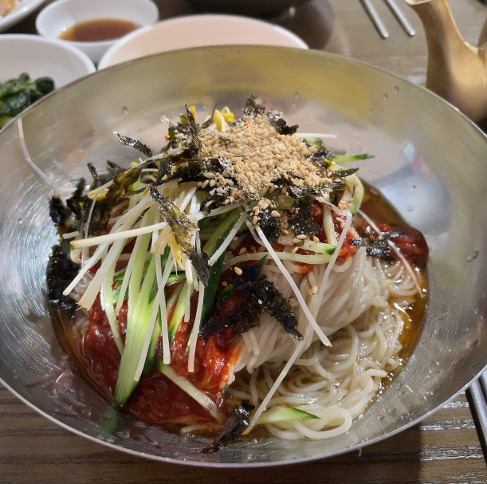
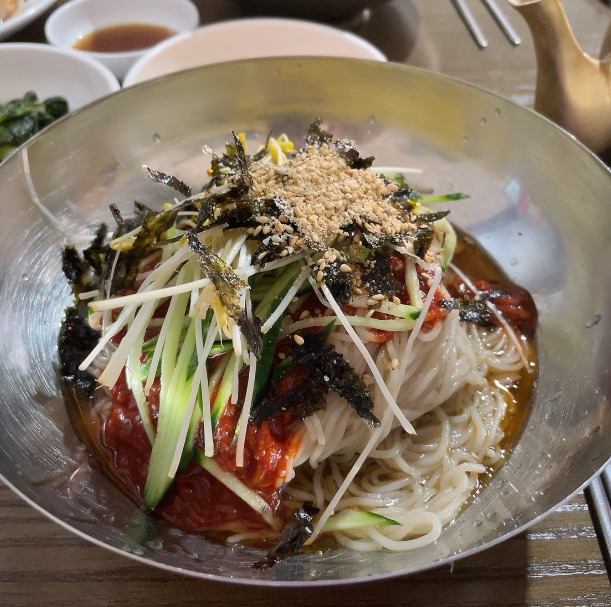

고향
안녕하세요! 제 이름은 조준곤 입니다. 제가 태어난 곳은 대구입니다. 어릴적 기억은 잘 나지 않지만 이사를 자주 다녔습니다. 2살때, 대구를 떠나 구미로 이사를 왔고 6살때까지 살았습니다. 2001년 7살이 되던 해, 저희 가족은 고양시 일산으로 이사를 왔습니다.
일산은 저에게 있어서 고향이라 말할 수 있는 곳입니다. 장정 20년 넘게 일산에서 살았고, 초중고를 다녔습니다. 대학교도 저희집과 가까운곳을 다니게 되어 집에서 등하교를 하였습니다. 잠시 군대와 유학생활을 제외하고는 항상 일산에 있었습니다.
27살 대학교를 졸업하고 28살이 되던 해 취직하여 현재 살고있는 수원으로 독립하게되었습니다. 20년 넘게 일산에만 살았던 터라 처음에는 타지 생활의 적응이 쉽지 않았습니다. 연고지도 없고 친구들도 모두 일산에 살고있다보니, 멀리 나가지 않으면 사람을 만나는게 어려웠습니다. 퇴근 후 혼자 있는게 지칠때쯤, 취미생활이라도 해야겠다고 결심을 했고 그렇게 복싱을 배우기 시작했습니다.
현재는 결혼을 앞두고 있고, 집은 대전으로 구할 계획입니다. 나중에 다시 경기권으로 올라올 예정이지만, 어떻게 될지는 모르겠습니다.
일정
| Sun | Mon | Tue | Wed | Thu | Fri | Sat |
|---|---|---|---|---|---|---|
|
30
|
1
|
2
|
3
|
4
|
5
|
6
소서
|
|
7
|
8
|
9
|
10
|
11
|
12
|
13
|
|
14
|
15
|
16
|
17
제헌절
|
18
|
19
|
20
|
|
21
|
22
대서
|
23
|
24
|
25
|
26
|
27
|
|
28
|
29
|
30
|
31
|
1
|
2
|
3
|
복싱
요즘들어 귀찮다는 핑계로 운동을 등한시 하고 있었습니다. 하지만, 점점 무거워 지는 몸과 바닥을 드러내고있는 체력을 보며 더이상은 이렇게 살면 안되겠다는 생각과 함께 복싱을 시작했습니다. 정확히 2년 전, 회사를 다니면서 복싱을 처음 배웠지만, 부서이동과 동시에 퇴근시간이 일정해지지 않아 그만둘 수 밖에 없었습니다. 당시에 복싱을 재밌게 배우고 있던터라 많이 아쉬운 마음이였습니다. 이번 기회에 다시 배우게 된것이 정말 행운이라고 생각합니다.
이번에 다니게 된 복싱장은 "매교 복싱"장 입니다. 복싱장 규모는 그렇게 크지 않지만, 사람이 많지 않았고 시설도 굉장히 깔끔한 편입니다. 옛날에 복싱을 배우면서 샀었던 장비들을 그대로 사용할 수 있어서 등록 비용도 어느정도 절감되었고, 건물 주차장을 무료로 사용할 수 있어서 너무나도 마음에 들었습니다. 관장님인지는 코치님인지는 잘 모르겠으나, 유쾌하신 분이 수업 커리큘럼에 대해서 자세히 소개시켜주셨습니다. 수업은 정해진 시간없이 자유로웠으며, 정해진 틀안에서 체계적으로 진행되었습니다.
수업시간은 대략 1시간 10분에서 20분 사이였고 준비운동, 줄넘기, 러닝으로 30분 정도 몸을 풀어주고, 20분에서 30분 정도 복싱수업을 하고 마무리로 체력단련과 스트레칭을 해주면 하루 수업이 끝입니다. 이번주 목요일부터 수업을 시작해 목금 이틀 수업을 참여했습니다. 아직 복싱을 하기위한 체력이 많이 부족한것이 절실히 체감되었고, 체력운동을 일순위로 해야할것 같다는 생각이 들었습니다.
나중에 체력과 근육이 받쳐진다면, 복싱외에 테니스도 배워보고 싶고, 현재 한계에 봉착된 클라이밍의 단계도 높여볼 예정입니다. 일전에 따놓았던 스쿠버다이빙 자격증도 advanced로 한단계 올리고 더 많은곳을 다녀보고 싶은 생각도 있습니다.


여행
혹시 여행다니는걸 좋아하시나요? 저는 집순이에 귀찮은걸 정말 싫어하는 스타일이여서 여행을 많이 다니지 못할거라 생각했습니다. 하지만, 돌이켜 보면 많은곳을 여행했고 정말 많은것을 볼수 있는 기회가 아니였나 생각이 듭니다. 저의 첫 해외 여행 일본 오사카를 시작으로 유럽, 미국, 세부를 다녀왔습니다. 특히 유럽여행을 다녀오면서 여행에 대한 진정한 의미를 찾게되었고, 더 많은곳을 여행하고자 노력하는 사람이 되었습니다.
저의 첫 여행 오사카는 정말 정말 더웠습니다. 구름 한점 찾아볼 수 없는 7월 중순 일본은 그야말로 사막과 아마존 그 사이 어딘가였습니다. 뜨거운 태양으로 숨이 턱턱 막히고 아침에 씻고 나와 5분도 채 걷지 못하고 땀방울이 흘러내렸습니다. 하지만 첫 해외여행이라 그런지 그런 더위도 얼마못가 잊혀졌습니다. 오사카 뿐만 아니라 교토, 나라 등 주변도 다녀보고, 일본인들과 술자리도 가져보고 정말 좋은 여행이였습니다. 일본은 부담없이 다녀오기 정말 좋은 나라라는 생각이 듭니다. 한국의 제주도 다녀오는것 보다 더 싸게 느껴지기도 합니다. 최근에는 후쿠오카도 다녀왔고 다음 목적지는 오키나와로 정해뒀습니다. 더 나중에는 도쿄, 삿포르를 다녀올 예정이고 가까운만큼 부담없이 즐길 수 있어 좋은것 같습니다.
여행에 대한 관점을 바꿔준 유럽은 정말 여러 측면으로 잊을 수 없는 여행이였습니다. 한국과는 너무나도 다른 문화, 한국에서는 볼 수 없는 다양한 음식, 자연, 건축물, 길거리 공연, 소극장 모든것이 새로웠고 흥미로웠습니다. 영국의 맛없는 피시앤칩스, 프랑스의 루브르박물관, 독일의 호프브로이 맥주집, 이탈리아의 로마와 베네치아 등 책으로, 사진으로만 볼 수 있었던 곳을 직접 보고 만지는것은 전혀 다른 경험이였습니다. 이렇게 좋은점도 있었지만, 힘든점도 있었습니다. 물갈이로 인한 피부 발진, 기숙사 형태의 숙박업체(다른 외국인들의 잠꼬대와 냄새가 힘들었습니다.), 엄청난 인파 등 힘들었을때도 많았지만, 친구들과 함께한 여행이기에 망치고싶지않아 최선을 다해 돌아다녔습니다. 물갈이로 인한 고생은 정말 최악이였지만, 그곳에서 느낀 감정들은 말로 이뤄 표현할 수 없었습니다.
미국과 세부 모든 여행지가 항상 새롭고 좋았습니다. 그 나라의 문화, 사람들의 생각, 사고방식등을 들여다 볼 수 있는것이 정말좋았습니다. 여행의 진정한 의미 역시 그 나라에 대한 이해라고 생각합니다. 여러 국가를 다니며, 그 나라만의 특색을 경험하는것이 너무나도 즐거운 일이였습니다. 다음 여행은 신혼여행으로 지금은 독일이나 오스트리아를 계획하고있습니다. 유럽여행이라 조금 걱정도 되지만, 만반의 준비를 갖추고 간다면 괜찮을거라 생각합니다.

음식
제가 최근 푹 빠지게된 음식이 있습니다. 그것은 다름아닌 막국수! 언제부턴가 메밀이 들어간 음식이 좋아지기 시작했고 요즘에는 일주일에 최소 한번은 막국수나 냉모밀을 먹어야만 하는 그런 사람이 되버렸습니다...그러다보니 여행을 다니면서 많은 막국수집을 가보게 되었는데 그중에 몇군데를 소개시켜드리고자 합니다.
가장 먼저 '경기 양주시 은현면 평화로1889번길 46-12'에 있는 "용암리 막국수"입니다. 이집은 파주에 친구를 만나러 갈때면 항상 점심메뉴 고정인 집입니다. 이집의 메뉴에는 부지깽이 막국수라는 특이한 메뉴가 있습니다. 들기름 막국수와 비슷하면서도 부지깽이의 독특한 맛을 함께 느낄수 있습니다. 저는 이 집에 부지깽이도 좋지만 정말 좋아하는 메뉴가 있습니다. 물막국수 입니다. 언뜻 보면 어디서든 볼 수 있는 메뉴지만, 이집의 물막국수는 평양식으로 담백한 국물이 일품입니다. 호불호가 있을 수는 있겠지만, 꼭 한번 드셔보시는걸 추천드립니다.
두번째 집은 '강원 평창군 봉평면 이효석길 33-5'에 있는 "메밀꽃향기"입니다. 이집은 막국수에 메밀싹이 들어가 메밀의 향이 진하게 나고 정말 맛있습니다. 이집의 특별 메뉴는 타타리수제묵입니다. 타타리메밀을 우려낸 메밀물에 통메밀을 갈아만든 수제묵으로 텁텁하면서도 부드러운 독특한 식감과 메밀의 향이 진하게 묻어나오는 묵입니다. 메밀을 좋아하신다면 강력추천 드리는 메뉴입니다.
마지막으로 소개드릴집은 다른 두곳에 비해 개인적인 선호도는 떨어지지만, 이 주변을 가실일이 있으시면 드셔보시길 추천합니다. 마지막 메밀집은 '경기 고양시 덕양구 행주로83번길 3-6'에 있는 "통메밀국수" 입니다. 이곳 역시 메밀싹을 함께 넣어주셔서 메밀 향 자체가 진하게 납니다. 이곳은 특이하게 메밀면을 선택할 수 있는데, 메밀이 얼마나 포함되어있는지에 따라 일반 메밀국수(80%), 순 메밀국수(100%)로 나뉩니다. 메밀을 좋아하시는 분이라면 순 메밀국수 추천드립니다.

 
